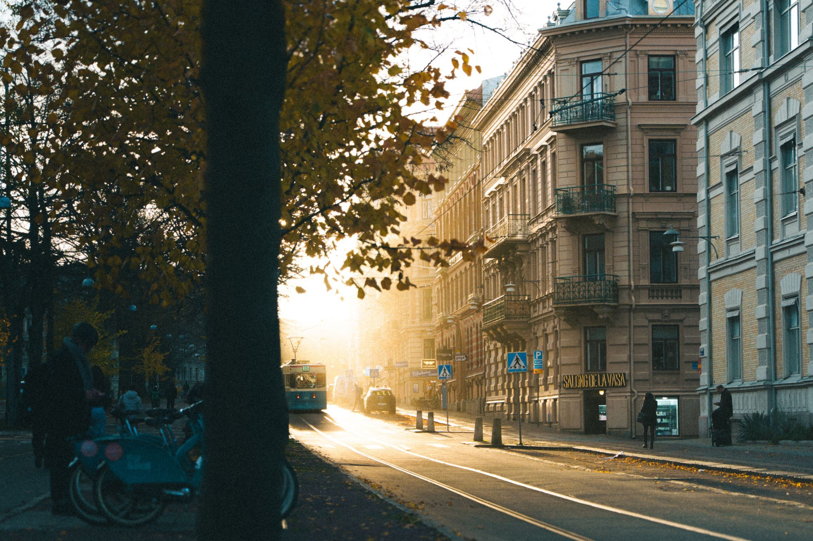
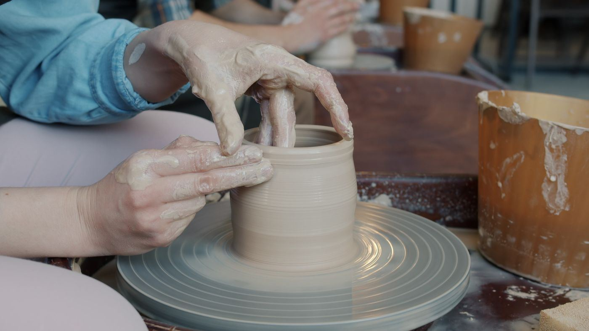
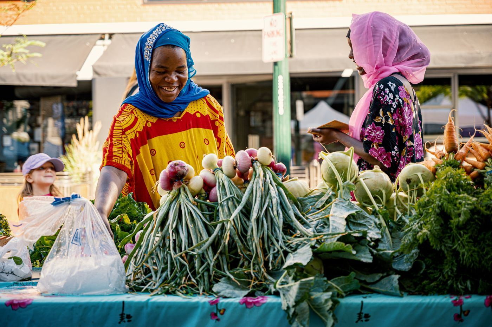
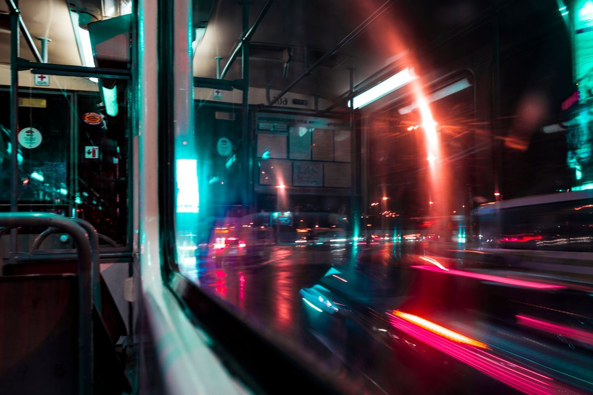
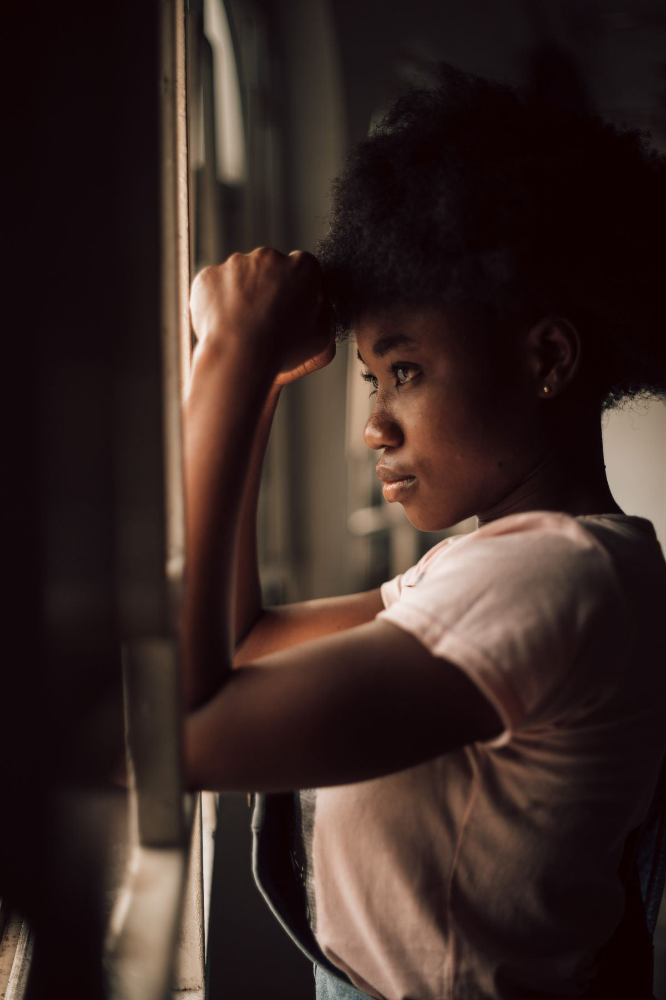

The slow return of the main street
Empty shopfronts are filling again, one bakery, bookshop and bike repairer at a time. We spent a month on the street to find out why.
Words by Hana Oduya · Photographs by the Review
Arts · Ideas · Local life

Empty shopfronts are filling again, one bakery, bookshop and bike repairer at a time. We spent a month on the street to find out why.
Words by Hana Oduya · Photographs by the Review

A field guide to the open studios trail, from wheel to kiln.

Half a century of tomatoes, gossip and very early starts.
“A town that cannot sit still on a bench has forgotten what a town is for.”
Mere Tamati on public seating

Night routes across the valley, from 11 pm to the depot.

“I paint the river because it never agrees to stay the same.”
The painter on light, patience and the sound of the weir.
Read the interview →One email on the first Sunday of the month. No tracking, unsubscribe any time.